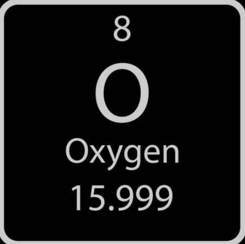
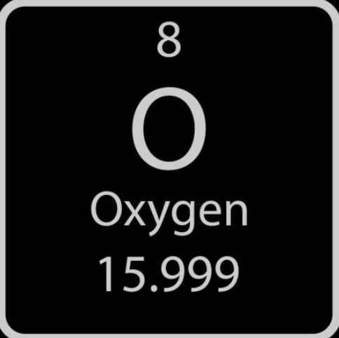

Introduction
In Chemistry, atoms and molecules are one of the main objects of study. One fact about them is that they are very small, for example, there are somewhere around \( 3.3 \times 10^{25} \) molecules in 1 L of water. Those large numbers make it inconvenient to do calculations, therefore, the concept of a mole makes these numbers easier to work with. Instead of saying \( 3.3 \times 10^{25} \) water molecules, you would say approximately 56 moles.
Definition
Scientific definition:
A mole is the amount of atoms in a sample of precisely 12g of carbon-12 isotopes.
A mole represents a specific quantity of things (like a dozen = 12). One mole is equivalent to:
\( N_A = 6.022 \times 10^{23} \ \text{mol}^{-1} \) (Avogadro’s constant)
Conversion
From moles to units: Multiply by \( N_A \)
Example: Atoms in 2 moles of helium:
\( N = 2 \times 6.022 \times 10^{23} = 1.2044 \times 10^{24} \ \text{atoms} \)
From units to moles: Divide by \( N_A \)
Example: Moles in \( 1 \times 10^{24} \) NaCl molecules:
\( n = \frac{1 \times 10^{24}}{6.022 \times 10^{23}} = 1.66 \ \text{mol} \)
Exercises
- Given world population = \( 8 \times 10^9 \), calculate moles of humans on earth.
- Calculate:
- a) Atoms of Cl in 7 mol of NaCl
- b) Atoms of H in 18 mol of H\(_2\)O
- c) Moles of H atoms in \( 1.4 \times 10^{25} \) H\(_2\)O\(_2\)
- d) Moles of O in \( 3.1 \times 10^{30} \) Al\(_2\)O\(_3\)
- 198 mol of H → How many NH\(_3\) molecules can you form?
- Earth-sized planet filled with water. Radius \( R = 6380 \text{ km} \), density \( = 1000 \ \text{kg/m}^3 \), molar mass = 18 g/mol. Find moles of water.
- Electron charge \( = 1.6 \times 10^{-19} \ \text{C} \). Calculate Faraday’s constant.
- Given:
\( PV = nRT \) and \( PV = Nk_BT \), find \( R \).
\( k_B = 1.38 \times 10^{-23} \ \text{J/K} \)
Solutions
- \( \frac{8 \times 10^9}{6.022 \times 10^{23}} = 1.328 \times 10^{-14} \ \text{mol} \)
-
a) \( 7 \times 6.022 \times 10^{23} = 4.215 \times 10^{24} \) atoms
b) \( 18 \ \text{mol H}_2\text{O} \rightarrow 36 \ \text{mol H} = 2.168 \times 10^{25} \ \text{atoms} \)
c) \( 1.4 \times 10^{25} \ \text{H}_2\text{O}_2 \rightarrow 2.8 \times 10^{25} \ \text{H atoms} \rightarrow 46.5 \ \text{mol} \)
d) \( 3.1 \times 10^{30} \ \text{Al}_2\text{O}_3 \rightarrow 9.3 \times 10^{30} \ \text{O atoms} = 1.544 \times 10^7 \ \text{mol} \) - \( 198 \ \text{mol H} \rightarrow 99 \ \text{mol H}_2 \rightarrow 66 \ \text{mol NH}_3 = 3.975 \times 10^{25} \ \text{molecules} \)
-
Volume = \( \frac{4}{3} \pi R^3 = 1.09 \times 10^{21} \ \text{m}^3 \)
Mass = \( 1.09 \times 10^{24} \ \text{kg} = 1.09 \times 10^{27} \ \text{g} \)
Moles = \( \frac{1.09 \times 10^{27}}{18} = 6.04 \times 10^{25} \ \text{mol} \) - \( F = 6.022 \times 10^{23} \times 1.6 \times 10^{-19} = 96352 \ \text{C/mol} \)
- \( R = N_A \cdot k_B = 6.022 \times 10^{23} \times 1.38 \times 10^{-23} = 8.31 \ \text{J/mol·K} \)
Units of measurement for mass
The unit of measurement for mass in the SI system is the kilogram (kg), in the context of molar mass and molecular mass, the units that will be used the most are the gram (g), which is a kilogram divided by 1000, and the atomic unit (u) or Dalton (Da), the atomic unit is defined in a way so that 1 mol of u is equal to 1 gram, therefore
\(6.022 \times 10^{23} \: \text{u} = 1\: \text{g} => 1\: \text{u} = 1.6606 \times 10^{-24}\: \text{g}\)
Since the atomic unit is small, it will be extremely useful for measuring the mass of a single molecule
Definitions
Molar mass: It is the mass of one mole (\(6.022 \times 10^{23}\)) of something, usually measured in (g/mol)
Example: Molar mass of the water: 18g/mol
Molecular mass: It is the mass of one molecule, usually measured in u (atomic units)
Example: Molecular mass of water: \(18\: \text{u} = 2.99 \times 10^{-23}\: \text{g}\)
Because of the way the atomic unit is defined, the molar mass measured in (g/mol) of a given molecule will always be equal to its molecular mass measured in u.
Calculating the molar mass
In order to calculate the mass of a molecule, you will need to add together the mass of each atom that forms the molecule, the mass of an atom will be determined by its element, information about the average mass of a chemical element can be found on the periodic table.
 

As you can see, the molar mass of carbon is 12.011 g/mol and for oxygen it is close to 16 g/mol.
So if you want to calculate the molar mass of \(\text{CO}_2\), you should do:
\(12 + 2 \times 16 = 44\) g/mol, since there is one carbon (12g/mol) and 2 oxygens (16g/mol)
More Conversion
From number of moles to mass: Multiply by molar mass, example 5 moles of \(\text{CO}_2 = 5 \times 44 = 220 \:\text{g}\) of \(\text{CO}_2\)
From mass to number of moles: Divide by molar mass, for example 440g of \(\text{CO}_2\) = \(\frac{440}{44} = 10\) moles of \(\text{CO}_2\)
Exercises
- Calculate the molar mass of the following molecules:
- \(\text{Al}_2\text{O}_3\)
- \(\text{NaCl}\)
- \(\text{H}_2\text{O}_2\)
- \(\text{C}_6 \text{H}_{12} \text{O}_6\)
- \(\text{PCl}_5\)
- If someone drinks 2L of water every, how many water molecules would be consumed in a week (Density of water = 1kg/L)
- The mass of earth’s atmosphere is \(5.15 \times 10^{18} \: \text{kg}\), assuming that the mass percentage of \(\text{N}_2\) is 75%, calculate the number of \(\text{N}_2\) molecules in the atmosphere.
Solutions
-
a) \(\text{Al}_2\text{O}_3 = 2 \times 26.98 + 3 \times 16 = 101.96 \: \text{g/mol}\)
b) \(\text{NaCl} = 22.99 + 35.45 = 58.44 \: \text{g/mol}\)
c) \(\text{H}_2\text{O}_2 = 2 \times 1.008 + 2 \times 16 = 34.02 \: \text{g/mol}\)
d) \(\text{C}_6\text{H}_{12}\text{O}_6 = 6 \times 12.01 + 12 \times 1.008 + 6 \times 16 = 180.18 \: \text{g/mol}\)
e) \(\text{PCl}_5 = 30.97 + 5 \times 35.45 = 208.24 \: \text{g/mol}\) - 2 L => 2 kg => 2000g
\(\frac{2000g}{18 \: \text{g/mol}} = 111.11 \: \text{moles} => 111.11 \times 6,022 \times 10^{23} = 6.69 \times 10^{25}\) Molecules/day
\(7 \times 6.69 \times 10^{25}\) = \(4.68 \times 10^{26}\) Molecules/week - \(0.75 \times 5.15 \times 10^{18} \: \text{kg} = 3.86 \times 10^{21} \: \text{g}\)
\(\frac{3.86 \times 10^{21} \: \text{g}} {28 \: \text{g/mol}} = 1.38 \times 10^{20} \: \text{moles}\) = \( 8.31 \times 10^{43} \) molecules of \(\text{N}_2\)
Written by Jailson Godeiro